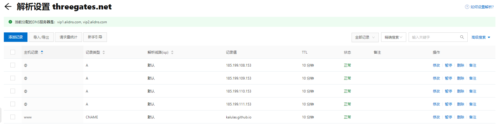

使用hexo快速进行博客搭建
使用hexo快速进行博客搭建
之前用wordpress搭建的博客需要折腾的东西太多，编辑器支持也不太好，没有Notion里记笔记来的方便（该说写个笔记两头传本来就麻烦），所以这次用hexo来搭建看看。
部署选择了一键同步生成的网站内容到github repo上，使用pages来进行网站部署，markdown源文件再自己使用github来同步。
这篇文章主要记录一下搭建网站的过程，还有给搭建的时候看的几个文档链接留个档。
官方文档
部署相关（github-pages）
- https://segmentfault.com/a/1190000017986794 一键部署
- https://zhuanlan.zhihu.com/p/26625249 自定义域名步骤参考，免去之前使用wordpress自己部署网站时解析的麻烦
- https://docs.github.com/en/pages/configuring-a-custom-domain-for-your-github-pages-site/about-custom-domains-and-github-pages
自定义域名在参考了上述链接后做了一点尝试：
-
这里开始需要做的是将域名重定向到github-pages，所以实际上需要参考的比较权威的文档是上面的链接3
-
github pages建议的是使用www域，说明了使用www域使pages也会为你进行apex domain（即不带www的threegates.net）的重定向。
We recommend always using a
wwwsubdomain, even if you also use an apex domain. When you create a new site with an apex domain, we automatically attempt to secure thewwwsubdomain for use when serving your site’s content. If you configure awwwsubdomain, we automatically attempt to secure the associated apex domain. -
参考“Managing a custom domain for your GitHub Pages site”，首先在gtihub repo的settings->pages目录下配置Custom Domain，这里使用
www.threegates.net -
在阿里云的DNS解析中配置，这里应该将
www.threegates.net使用CNAME形式解析到我的kalulas.github.io，且通过dig工具和后续文档可以得知，如果配置了threegates.net到github pages提供的四个DNS（见下文），github pages会帮你重定向到网页内容，而www.threegates.net配置到kalulas.github.io之后，后面其实也是解析到github.pages的DNS -
配置如图：
-
dig命令解析结果如下（threegates.net的解析情况也一样）：
$ dig kalulas.github.io +nostats +nocomments +nocmd ; <<>> DiG 9.11.4-P2-RedHat-9.11.4-26.P2.el7_9.8 <<>> kalulas.github.io +nostats +nocomments +nocmd ;; global options: +cmd ;kalulas.github.io. IN A kalulas.github.io. 3600 IN A 185.199.109.153 kalulas.github.io. 3600 IN A 185.199.111.153 kalulas.github.io. 3600 IN A 185.199.110.153 kalulas.github.io. 3600 IN A 185.199.108.153$ dig www.threegates.net +nostats +nocomment ; <<>> DiG 9.11.4-P2-RedHat-9.11.4-26.P2.el7_9.8 <<>> www.threegates.net +nostats +nocomment ;; global options: +cmd ;www.threegates.net. IN A www.threegates.net. 600 IN CNAME kalulas.github.io. kalulas.github.io. 3600 IN A 185.199.109.153 kalulas.github.io. 3600 IN A 185.199.111.153 kalulas.github.io. 3600 IN A 185.199.110.153 kalulas.github.io. 3600 IN A 185.199.108.153 -
最后，在第4步中修改Custom Domain会添加一个文件CNAME到repo的根目录下，但是由于使用了一键部署，实际上同步的目录是~/…/your_site/.deploy_git，可以在这个目录下同步，但是这个目录是由~/…/your_site/source生成而来的，所以得在source下也创建一个CNAME文件，内容就用github为你生成的
www.threegates.net即可 -
最后，文档提示了可以enforce HTTPS，这个就作为可选项就晚点再做吧
{kind=link}
网站主题
- https://theme-next.iissnan.com/getting-started.html 现在用的是NEXT主题，主题的参考文档也挺详细。纠正一个文档中发现的错误：文档中设置语言使用的language是zh-Hans，但现在使用的是zh-CN，可能是没更新的原因
- https://theme-next.js.org/docs/ 一样是NEXT主题的文档，但是英文版的似乎内容更全一点，阅读起来也不费劲
样式（layout）自定义
阅读了hexo和NEXT的模板相关文章，简单看了下关联的njx，ejs文件，想通过is_post()或者is_home()的helper方法实现一下仅在文章页显示阅读进度条的效果，但是似乎返回结果不正确，现在在next的github页提了issue还在等回复。
njx中的语法与ejs不完全相同，简单参考了非官方文档：
- https://carrion.cc/20210201/85bc1840d3ea.html 核对了一下njk中的helper语法
图片墙
选用了hexo-light-gallery插件，传送门 https://github.com/lzane/hexo-light-gallery 按照教程安装了hexo-light-gallery，对node_modules/hexo-light-gallery/src/renderer.js 做了一点修改
// node_modules/hexo-light-gallery/src/renderer.js
function addTag(data){
var config = this.config.lightgallery;
if(!config){
return;
}
// add js
// 这里本来 '>' 在 '"' 前面，会造成结构破坏
data.content = '<div class=".article-gallery">'+data.content+'</div>';
data.content+='<script src="'+config.js+'"></script>';
// add css
var css = '<link rel="stylesheet" type="text/css" href="'+config.css+'" />';
data.content = css + data.content;
// add plugins
var plugins = Object.keys(config.plugins);
for (var plugin of plugins){
var jsTag = '<script src="'+config.plugins[plugin]+'"></script>';
data.content += jsTag;
}
}
// ...
function render(data){
if (ignore(data)){
return;
}
// 如果找不到图片标签，就不执行下面的代码，就不会在不需要的地方增加多余内容
if (!imgRgr.exec(data.content)){
return;
}
wrapImage.call(this,data);
addTag.call(this,data);
addRunnableTag.call(this,data);
};
在lightgallery提供的插件（插件的插件…）中补充了三个插件：
- lg-thumbnail: 提供图片的缩略图
- lg-zoom: 提供图片缩放功能
- lg-fullscreen: 提供图片全屏预览功能
三个插件都通过npm下载了.min.js文件，放置于/source/js/下，现在的_config.yml如下
# Plugin: lightgallery https://github.com/lzane/hexo-light-gallery
lightgallery:
# if you don't specify the css or js source, the default cdn will be used.
# css: # css source url
# js: #js source url
# sorry that I can not find any cdn hosting following plugins,
# please self-host the plugin js and add url here
plugins:
lg-thumbnail: /js/lg-thumbnail.min.js
lg-zoom: /js/lg-zoom.min.js
# lg-autoplay:
lg-fullscreen: /js/lg-fullscreen.min.js
# lg-pager:
基于模板进行html生成
很在意html中的一些代码引用标签<script>是用什么逻辑加上的，如图上的这种
{kind=link}
要知道它的生成机制才方便做一些js代码上传，还有cdn上的资源放到本地这样的操作，进行了一些排查大致定位下下面这些信息：
- /node_modules/hexo-theme-next/layout/_scripts/index.njk 文件里可以利用next_js()加载了这些next提供的静态js文件
1 {%- include 'vendors.njk' -%}
2
3 {{- next_js('comments.js') }}
4
5 {{- next_js('utils.js') }}
6 {%- if theme.motion.enable %}
7 {{- next_js('motion.js') }}
8 {%- endif %}
9
10 {%- if theme.scheme === 'Muse' or theme.scheme === 'Mist' %}
11 {{- next_js('schemes/muse.js') }}
12 {%- endif %}
13
14 {{- next_js('next-boot.js') }}
15 {%- if theme.bookmark.enable %}
16 {{- next_js('bookmark.js') }}
17 {%- endif %}
18 {%- if theme.pjax %}
19 {{- next_js('pjax.js') }}
20 {%- endif %}
而在vendors.njk下可以看到
1 {%- if theme.canvas_ribbon.enable %}
2 <script size="{{ theme.canvas_ribbon.size }}" alpha="{{ theme.canvas_ribbon.alpha }}" zIndex="{{ theme.canvas_ribbon.zIndex }}" src="{{ theme.vendors.canvas_ribbon.url }}"></script>
3 {%- endif %}
4
5 {%- for name in js_vendors() %}
6 {{ next_vendors(name) }}
7 {%- endfor %}
加载的就是js_vendors下声明所有js资源
- 像prism-core的这些cdn上获取的js资源，先通过配置来决定是否加载，添加cdn的逻辑如下
1 // node_modules/hexo-theme-next/scripts/helpers/next-vendors.js
/* global hexo */
2
3 'use strict';
4
5 hexo.extend.helper.register('js_vendors', function() {
6 const { config, theme } = this;
7 const vendors = ['anime'];
8 if (config.prismjs.enable && !config.prismjs.preprocess) {
9 vendors.push('prism', 'prism_autoloader');
10 if (config.prismjs.line_number) {
11 vendors.push('prism_line_numbers');
12 }
13 }
14 if (theme.pjax) {
15 vendors.push('pjax');
16 }
17 if (theme.fancybox) {
18 vendors.push('jquery', 'fancybox_js');
19 }
20 if (theme.mediumzoom) {
21 vendors.push('mediumzoom');
22 }
23 if (theme.lazyload) {
24 vendors.push('lazyload');
25 }
26 if (theme.pangu) {
27 vendors.push('pangu');
28 }
29 return vendors;
30 });
在/node_modules/hexo-theme-next/layout/_scripts/vendors.njk下面遍历js_vendors列表，遍历逻辑就是调用scripts/helpers/engine.js中注册的next_vendors，将代码资源的名字传入。而next_vendors的逻辑就是在theme配置的vendors字段中找相应的配置内容。
32 hexo.extend.helper.register('next_vendors', function(name) {
33 const { url, integrity } = this.theme.vendors[name];
34 const type = url.endsWith('css') ? 'css' : 'js';
35 if (type === 'css') {
36 if (integrity) return `<link rel="stylesheet" href="${url}" integrity="${integrity}" crossorigin="anonymous">`;
37 return `<link rel="stylesheet" href="${url}">`;
38 }
39 if (integrity) return `<script src="${url}" integrity="${integrity}" crossorigin="anonymous"></script>`;
40 return `<script src="${url}"></script>`;
41 });
- 所以如果想加一个js文件资源引用，可以考虑在index.njk就利用next_js()加上，也可以考虑放在next-vendors.js的vendors列表里面，然后再到theme的_config.yml文件里面去配置。
资源文件夹
网站需要显示一些像网站图标和用户画像，还有文章中的截图这样的资源，参考hexo文档，最后采用的方式是将配置项post_asset_folder设置为true，这会让hexo在新建post时为这个post新建一个同名资源文件夹。然后使用hexo-renderer-marked 3.1.0 的特性，在文章中直接使用markdown图片格式，图片链接直接填写图片文件名，hexo会将资源请求重定向到post的同名资源文件夹中。
值得一提的是也可以在其他post中使用相对路径来索引到这些资源，为post之间共享资源提供了思路。
_config.yml配置形式如下：
post_asset_folder: true
marked:
prependRoot: true
postAsset: true